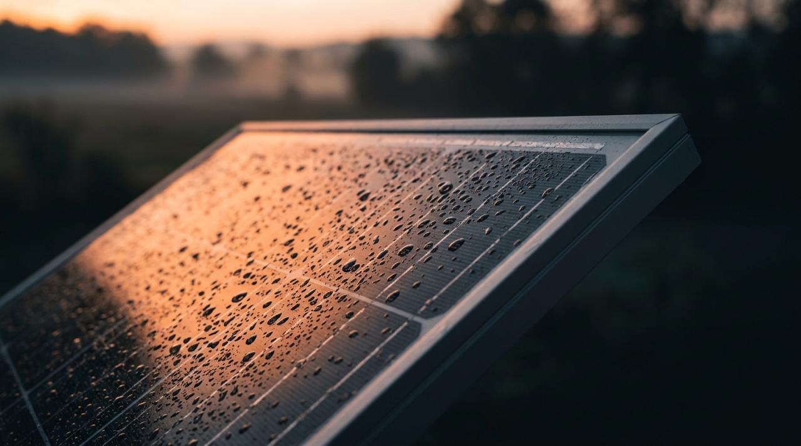
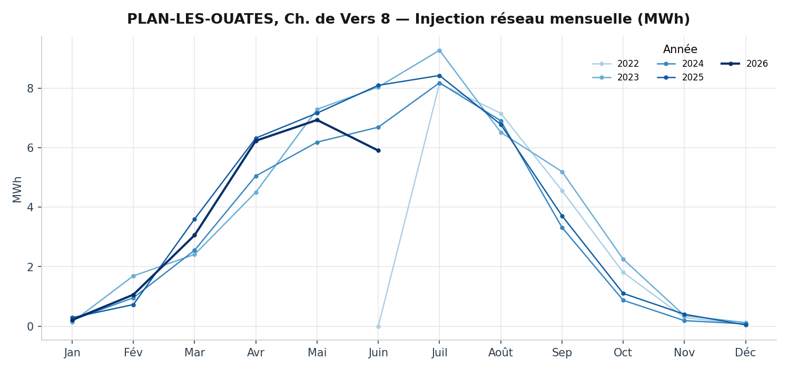
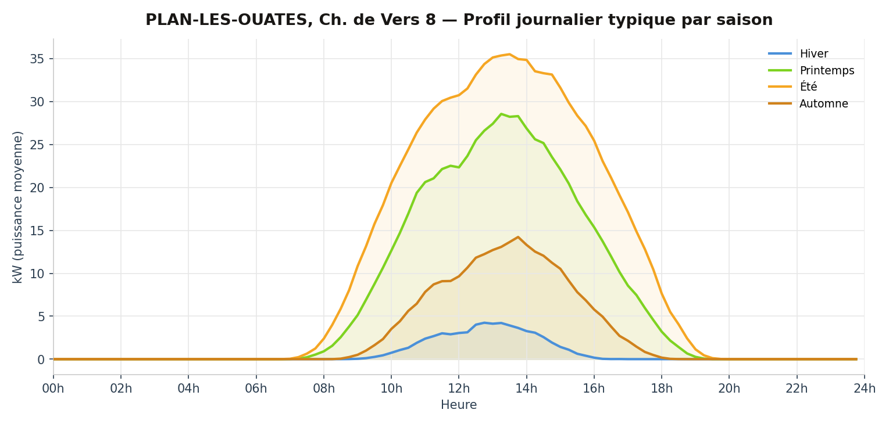
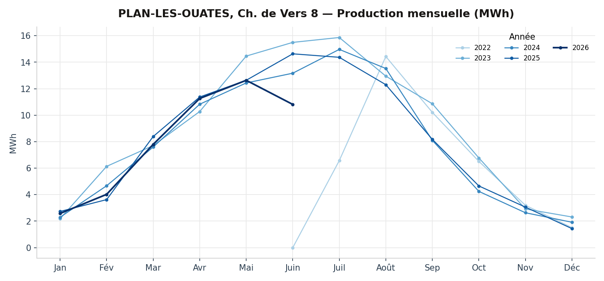

Installation 03 — Plan-les-Ouates
Ch. de Vers 8
1228 Plan-les-Ouates — en service depuis 2022 — réalisée par Solstis SA
- Puissance
- 97,5 kWc
- Surface
- 483 m²
- Production
- 100 000 kWh/an
- Coût
- 180 000 CHF
- Rétribution unique
- 32 000 CHF

La fiche complète
L'installation.
La coopérative Enerko a financé l'installation photovoltaïque sur la toiture du bâtiment de la commune de Plan-les-Ouates, au chemin de Vers 8. La coopérative Enerko a également monté une communauté d'autoconsommateurs au sein du bâtiment, ceci afin de maximiser l'autoconsommation de l'électricité solaire produite en toiture.
L'installation PV
Cette installation se compose de 260 modules monocristallins (Bisol 375 Wc) disposés sur la toiture plate. Les modules PV sont posés en shed à 10° d'inclinaison, orientés Sud-Ouest (55°). Un onduleur Solarmax 110 SXT, positionné en toiture, transforme le courant continu en courant alternatif utilisable dans le bâtiment et compatible avec le réseau électrique. La production d'électricité solaire est estimée à environ 100'000 kWh.
Investissement porté par la coopérative Enerko, avec une subvention de la commune de Plan-les-Ouates équivalente à la rétribution unique (32'000.- CHF).
La communauté d'autoconsommateurs
Certains locataires (ménages et activités) qui le souhaitent, ainsi que les consommateurs techniques (ventilation, communs d'immeubles, etc.) sont regroupés dans une communauté d'autoconsommateurs (société simple). La coopérative Enerko est la représentante de la communauté vis-à-vis de SIG, qui s'occupe de la facturation. Enerko vend l'électricité produite aux membres de la communauté et le prix est indexé 2 centimes plus bas que le tarif SIG Vitale Bleu.
Du fait de la configuration des installations électriques, la consommation instantanée d'électricité PV est priorisée par rapport à l'électricité provenant du réseau électrique. Ce regroupement permet ainsi, selon les premières estimations, d'autoconsommer 40% de la production PV.
La transparence en pratique
Les données mesurées
Relevés SIG au pas de 15 minutes pour cette installation.
Injection réseau
Aucun trou significatif détecté.


Production PV
Aucun trou significatif détecté.



Ce toit appartient à ses coopérateurs.
Le prochain pourrait vous appartenir aussi.